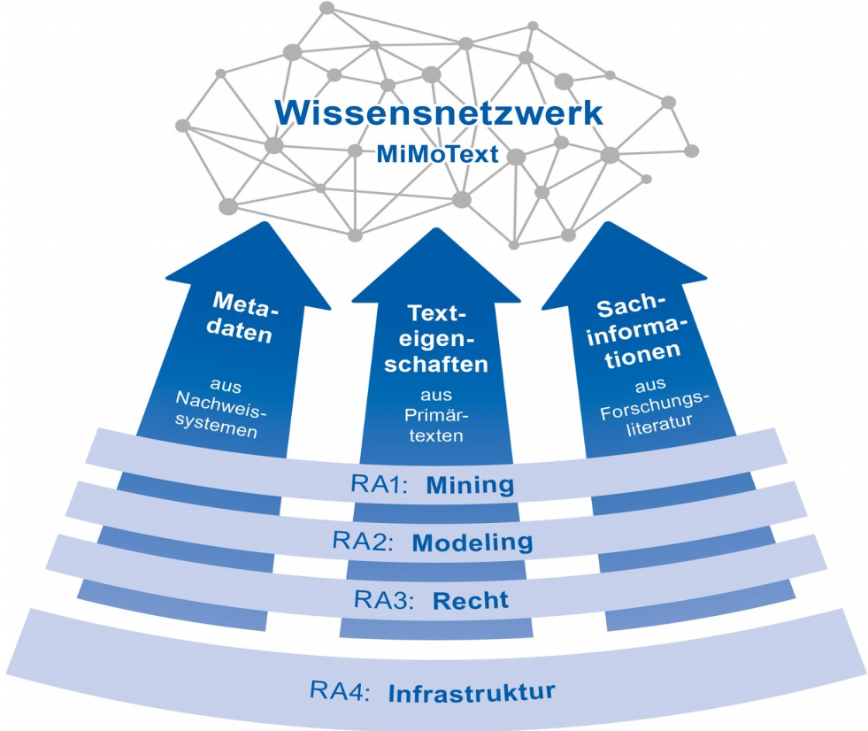
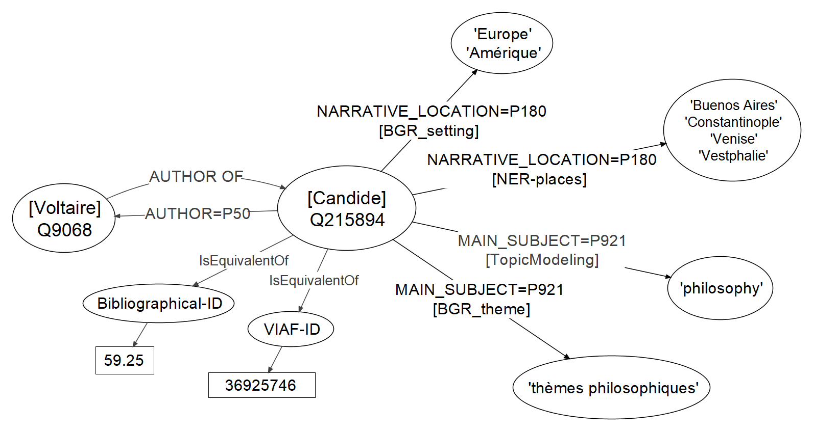

<!doctype html>
<html lang="en">
<head>
<meta charset="utf-8">
<!-- CUSTOMIZE THIS! -->
<title>Offene Publikationsformate</title>
<meta name="author" content="Christof Schöch">
<!-- END -->
<meta name="description" content="Slides">
<meta name="apple-mobile-web-app-capable" content="yes">
<meta name="apple-mobile-web-app-status-bar-style" content="black-translucent">
<meta name="viewport" content="width=device-width, initial-scale=1.0, maximum-scale=1.0, user-scalable=no, minimal-ui">
<link rel="stylesheet" href="css/reveal.css">
<link rel="stylesheet" href="css/theme/simple.css" id="theme">
<!-- Code syntax highlighting -->
<link rel="stylesheet" href="lib/css/zenburn.css">
<!-- Printing and PDF exports -->
<script>
var link = document.createElement( 'link' );
link.rel = 'stylesheet';
link.type = 'text/css';
link.href = window.location.search.match( /print-pdf/gi ) ? 'css/print/pdf.css' : 'css/print/paper.css';
document.getElementsByTagName( 'head' )[0].appendChild( link );
</script>
<!--[if lt IE 9]>
<script src="lib/js/html5shiv.js"></script>
<![endif]-->
</head>

<body>
<div class="reveal">
<div class="slides">
<section data-markdown="" data-separator="^\n-\n" data-separator-vertical="^\n--\n" data-separator-notes="^::" data-charset="utf-8" data-background-image="img/basics/uni-trier-icon.png" data-background-size="50px" data-background-position="top 10px right 10px">
<script type="text/template">

<!-- THIS IS WHERE THE CONTENT GOES! -->
<!-- Any section element inside of this container is displayed as a slide -->

##Offene Publiationsformate<br/>für Open Science
<hr/>
<br/>
<br/>Prof. Dr. Christof Schöch (Trier)
<br/>Folien: https://mimotext.github.io/oam/#/
<br/>
<br/>***Open Access Tage 2020***
<br/>**15.-17.9.2020, Bielefeld**
<br/>
<br/>
<hr/>
</img>&nbsp;&nbsp;&nbsp;</img>

::
- Ich freue mich, heute im Rahmen der OAT sprechen zu können
- Bedauere es sehr, dass ich Terminkonflikt habe
- Hoffe, es geht auch so! 
- Meine Kollegin Dr. Maria Hinzmann ist hier, um Fragen zu beantworten und ihre Anregungen mitzunehmen
- Thema: Offene Publikationsformate für Open Science
- Zunächst kurz darlegen, was mich zu diesem Thema motiviert hat
- Dann Stand der Dinge skizzieren
- Dabei auch Vorschläge für die nächsten Schritte machen
- Und von Ihnen zu hören, welche Prioritäten Sie sehen


-
# Motivation

--
## Projekt MiMoText

<br/>Mining and Modeling Text – https://mimotext.uni-trier.de

::
- laufendes Projekt am TCDH der Universität Trier, von Dr. Hinzmann koordiniert
- Gegenstand: französischer Roman des 18. Jahrhunderts
- Drei Informationsquellen: 
- (1) Metadaten aus Nachweissystemen (Bibliographie du genre romanesque francais); 
- (2) Sachinformationen aus Fachliteratur (Literaturgeschichten); 
- (3) Texteigenschaften aus Primärtexten (Volltexte der Romane) 
- Ziel: Informationen extrahieren, als LOD modellieren und zusammenführen

--
## MiMoText-Informationsnetzwerk


::
- (1) Setting
- (2) Themen 

--
## Motivation 
1. Drei Desiderate <!-- .element: class="fragment" data-fragment-index="1" --> 
    1. Mehr Digitalisierung älterer Fachliteratur
    1. Mehr Daten im Open Access verfügbar (UrhG!)
    1. Mehr strukturierte Informationen
1. Zwei Perspektiven <!-- .element: class="fragment" data-fragment-index="2" --> 
    1. Retrospektive Sicht (Projekt)
    1. Prospektive Sicht (weiterer Vortrag)

::
- Warum Motivation: weil es frustrierend ist, dass wir so viel Forschungsliteratur haben, aber das enthaltene Wissen so mühsam zu extrahieren ist: (a) Digitalisierung, (b) open Access, (c) strukturierte Informationen (HEUTE!)
- Daraus doppelte Perspektive: 
-- (1) Die retrospektive Sicht: Wie können wir ältere Literatur auswerten / aufbereiten?
-- (2) Die prospektive Sicht: Wie können wir Publikationen so verbessern, dass das in Zukunft einfacher wird? 
-- Während es im Projekt um die retrospektive Sicht geht, soll es hier heute vor allem um die prospektive Sicht gehen.

-
# Open Access<br/>für die Maschinen

::
- Sicherlich wenig umstritten:
- Das PDF als digitale Kopie des gedruckten Buchs: allenfalls Rezeptionsformat, aber kein Referenz- oder Archivformat
- Sehr viele Informationen sind in anderen Formaten besser aufgehoben
- Nicht nur als separate Metadaten, sondern von Anfang den Text so denken

--
## Welche Informationen?
1. Bibliografische Angaben (Metadaten, Referenzen) <!-- .element: class="fragment" data-fragment-index="1" --> 
1. Textstruktur (Makrostruktur, Mikrostruktur) <!-- .element: class="fragment" data-fragment-index="2" --> 
1. Entitäten (Personen, Orte, Konzepte, Gegenstände) <!-- .element: class="fragment" data-fragment-index="3" --> 
1. Textinhalt (Schlagworte, Kernaussagen) <!-- .element: class="fragment" data-fragment-index="4" --> 

::
- Bibliografisches: Metadaten des Artikels; alle Referenzen
- Textstruktur: Makrostruktur (bspw. Abstract vs. Haupttext) und Mikrostruktur (bspw. Zitate innerhalb des Haupttextes)
- Entitäten: Persone, Orte, Organisationen, Forschungsgegenstände
- Textinhalt: Abstract, Schlagworte, vor allem aber: Kernaussagen in semantisch kodierter Form (LOD / Triples)


--
## (1) Bibliografische Angaben
* Wo stehen wir?  <!-- .element: class="fragment" data-fragment-index="1" --> 
  * Plattformen wie CiteSeerX machen Zitationsdaten verfügbar
  * Erfordert: crawlen und (meist) strukturieren
* Wo sollten wir hinkommen? <!-- .element: class="fragment" data-fragment-index="2" --> 
  * Jeder Artikel liefert Referenzen in strukturierter Form mit 
  * Eingebettet in XML (TEI/JATS) oder als BibTeX/BibJSON-Supplement

::
- Siehe auch: Initiativen wie OpenAIRE Research Graph (Vortrag in der OpenAire Session, die folgt!), die Forschungsoutput modellieren, allerdings auch ohne die eigentlichen Inhalte zu berücksichtigen.)
- Das könnte man eigentlich erwarten, da nutzungsfreundliche Tools zur Verfügung stehen, die ohnehin praktisch sind (Zotero, Citavi)

--
## (2) Textstruktur
* Wo stehen wir? <!-- .element: class="fragment" data-fragment-index="1" --> 
  * Einige Plattformen bieten XML an (OpenEdition, OLH, DHQ, ZfdG, PLoS)
  * Nutzen dafür meist JATS oder XML-TEI
  * Teils wird auch LaTeX angeboten (bspw. arXiv)
* Wo sollten wir hinkommen? <!-- .element: class="fragment" data-fragment-index="2" --> 
  * Zeitschriften bieten grundsätzlich XML (und EPUB, PDF) an
  * XML kodiert Makrostruktur und Mikrostruktur
  * Editoren kodieren das automatisch (semantische Formatvorlagen)

--
## Ein Artikel in XML-TEI
<br/><a href="data/jtei-oc-ds-schoch-144-source.xml"></a>

--
## (3) Entitäten mit Normdaten
* Wo stehen wir? <!-- .element: class="fragment" data-fragment-index="1" --> 
    * Entitäten vereinzelt als Schlagworte
    * Teilweise indirekt und unstrukturiert via Register / Index
    * Ansonsten meist nur Volltextsuche
* Wo müssten wir hinkommen? <!-- .element: class="fragment" data-fragment-index="2" --> 
    * Entitäten werden im Text markiert und identifiziert
    * Normdatenquellen: GND, VIAF, Wikidata, Geonames, etc.
    * Auch hier: Schreibprogramm macht Vorschläge, Autor:in disambiguiert

::
- Bspw. Forschungsgegenstände: Romane, Gemälde, Ereignisse, Proteine uvm.
- In XML wäre das problemlos möglich: `<entity>` @type und @ref


--
## (4) Maschinenlesbarer Inhalt (LOD)
* Wo stehen wir? <!-- .element: class="fragment" data-fragment-index="1" --> 
  * Abtracts und Schlagworte (= unstrukturiert)
  * Vorschlag "semantic abstracts" von David Shotton 2009
* Wo müssten wir hinkommen?<!-- .element: class="fragment" data-fragment-index="2" --> 
  * Thesen, Beobachtungen und Ergebnisse als LOD-Statements
  * Mehrere Hindernisse: Mangel an Ontologien; Aufwand für Autor:innen
  * Lösungsansätze: Taxonomy Learning (u.a. Wang et al. 2017)
  * Information Extraction

::
- Seit David Shottons Vorschlag wenig sichtbarer Fortschritt
- Ich habe aber den Eindruck, es passiert doch einiges
- Beispiel: Open Knowledge Research Graph der TIB Hannover (Sören Auer)
- Taxonomy Learning: Auch für die Zuordnung von Wörtern zu Hypernymen und dann zu Normdaten

--
## Linked Open Data

<small>

ISBN:9780141985411 ...
* HAS_TITLE "Weapons of Math Destruction"
* HAS_PUBLICATION_YEAR "2016"
* HAS_SUBJECT "Big Data"
* MENTIONS_ENTITY "Sense Networks"
* HAS_THESIS {"Big Data" REINFORCES "discrimination"}
* HAS_CONCLUSION {"AI" REQUIRES "regulation"}

</small>

--
## Offene Formate ermöglichen Open Science 
* Intelligente Suche über viele Publikationen <!-- .element: class="fragment" data-fragment-index="1" --> 
* Analyse von Zitationsnetzwerken  <!-- .element: class="fragment" data-fragment-index="2" --> 
* Linguistische Analysen der Wissenschaftssprache <!-- .element: class="fragment" data-fragment-index="3" --> 
* Erheben des Forschungsstands zu einem Thema <!-- .element: class="fragment" data-fragment-index="4" --> 
* Rekonstruktion des Fachdiskurses in seiner Entwicklung <!-- .element: class="fragment" data-fragment-index="5 --> 
* uvm... <!-- .element: class="fragment" data-fragment-index="5" --> 

::
- Das alles geht nur, wenn die Informationen nicht von kommerziellen Datenanbietern extrahiert werden, sondern von Anfang an mit den Artikeln frei verfügbar und offen lizenziert erscheinen (!!)


-
# Abschluss

--
## Persönliches Fazit
* Derzeit einiges in Bewegung (Knowledge Graph)
* Problem: Wer erbringt den Mehraufwand?
* Wird bessere Software das Problem lösen?

::
- Ich glaube nicht, dass sich die skizzierte Vision umsetzen lässt, wenn man den Zusatzaufwand den Autor:innen aufbürdet
- Aber auch die nachträgliche Aufwertung, Annotation, Auszeichnung der Texte im Redaktionsprozess ist nicht sinnvoll
- Wir brauchen endlich wissenschaftsadäquate, semantische Schreibsoftware, die den Schreibprozess adäquat unterstützt
- Größtes Hindernis: der Mangel an geeigneten Ontologien oder Vokabularien für viele Wissenschaftsbereiche
- Ihre Meinung würde mich sehr interessieren!


--
## Referenzen
<small>
* Lüschow, Andreas (2020): "Automatische Extraktion und semantische Modellierung der Einträge einer Bibliographie französischsprachiger Romane", in: _Spielräume: Digital Humanities zwischen Modellierung und Interpretation. Konferenzabstracts_. Paderborn: DHd-Verband, S. 80–84. https://doi.org/10.5281/zenodo.3666690
* Schöch, Christof (2020): "Open Access für die Maschinen", in: Maria Effinger und Hubertus Kohle (Hrsg.): _Die Zukunft des kunsthistorischen Publizierens_,
Heidelberg: arthistoricum.net. https://doi.org/10.11588/arthistoricum.663.c9210
* Schöch, Christof, Frédéric Döhl, Achim Rettinger, Evelyn Gius, Peer Trilcke, Peter Leinen, Fotis Jannidis, Maria Hinzmann, and Jörg Röpke (im Erscheinen): "Abgeleitete Textformate: Text Und Data Mining Mit Urheberrechtlich Geschützten Textbeständen", in: _Zeitschrift Für Digitale Geisteswissenschaften (ZfdG)_.
* Shotton, David (2009): "Semantic Publishing: The Coming Revolution in Scientific Journal Publishing", in: _Learned Publishing_ 22.2, S. 85–94. https://doi.org/10.1087/2009202.
* Wang, Chengyu, Xiaofeng He, and Aoying Zhou (2017): "A Short Survey on Taxonomy Learning from Text Corpora: Issues, Resources and Recent Advances", in: _Proceedings of the 2017 Conference on Empirical Methods in Natural Language Processing_, S. 1190–1203.

</small>


--

<br/>
<br/>
### Danke für die Aufmerksamkeit!
<br/>
<br/>
<hr/>
<small>Christof Schöch, <a href="dh.uni-trier.de">DH Trier</a>, 2020, <a href="https://creativecommons.org/licenses/by/4.0/">CC-BY 4.0</a>
<br/>Bildquelle: Howard Miller, <a href="https://commons.wikimedia.org/wiki/File:We_Can_Do_It!.jpg">Wikimedia Commons</a> (public domain)</small>
<hr/>
<br/>
<br/>
</script>
</section>


<!-- DON'T TOUCH UNLESS YOU KNOW WHAT YOU'RE DOING :-) -->
</div>
<script src="lib/js/head.min.js"></script>
<script src="js/reveal.js"></script>
<script>
// Full list of configuration options available at:
// https://github.com/hakimel/reveal.js#configuration
Reveal.initialize({
    controls: true,
    progress: true,
    history: true,
    center: true,
    transition: 'slide', // none/fade/slide/convex/concave/zoom
    // Optional reveal.js plugins
    dependencies: [
        { src: 'lib/js/classList.js', condition: function() { return !document.body.classList; } },
        { src: 'plugin/markdown/marked.js', condition: function() { return !!document.querySelector( '[data-markdown]' ); } },
        { src: 'plugin/markdown/markdown.js', condition: function() { return !!document.querySelector( '[data-markdown]' ); } },
        { src: 'plugin/highlight/highlight.js', async: true, callback: function() { hljs.initHighlightingOnLoad(); } },
        { src: 'plugin/zoom-js/zoom.js', async: true },
        { src: 'plugin/notes/notes.js', async: true }
        ]
    });
</script>
</body>
</html>
